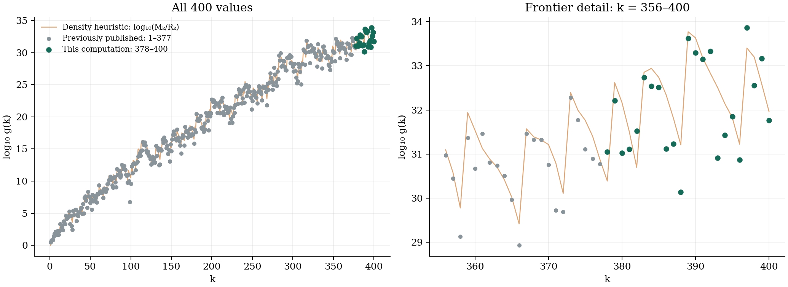

Further values of the Erdős–Selfridge function
and a GPU algorithm for computing them
Alexander Eastwood
Independent researcher · eastwood.alexander@gmail.com
MSC 2020: 11Y55, 11B65, 11Y16
Submitted to arXiv by Jonathan Webster as an enabling courtesy; he is not an author and claims no contribution to the results reported here.
Abstract
Let $g(k)$ denote the least integer $n>k+1$ such that $\binom{n}{k}$ has no prime factor $\le k$ (OEIS A003458). We compute the seven values $g(378),\dots,g(384)$, extending the published frontier, and independently reproduce the values $g(376)$ and $g(377)$ of Sorenson, Sorenson and Webster. The algorithm is their wheel-and-filter method with a knapsack choice of partial prime powers, implemented as an exact 128-bit residue enumeration on a single GPU at $2.2\times10^{11}$ candidates per second; each term is found in hours of wall time rather than the one to two weeks reported for the 192-core computation of 2020. Each value is certified by two runs with different wheels, an independent reference check of Kummer's condition, and a published per-block ledger that allows any single block to be re-sieved on a CPU. We also record that across the 377 previously published terms the ratio $g(k)/(M_k/R_k)$ is consistent with an Exponential(1) law (Kolmogorov–Smirnov statistic 0.0895), and state this as a conjecture.
1. Introduction
Erdős and Selfridge [1] asked how large $n$ must be before $\binom nk$ can avoid every prime $\le k$. Writing $p(m)$ for the least prime factor of $m$, define \[ g(k)=\min\{\,n>k+1 : p(\tbinom nk)>k\,\}. \] Tables of $g(k)$ were computed by Ecklund, Erdős and Selfridge [1], Scheidler and Williams [2], Lukes, Scheidler and Williams [3] (to $k=200$), and by Sorenson, Sorenson and Webster [4] to $k=375$, with $g(376)$ and $g(377)$ in an addendum [5]. The last two required one and two weeks of wall time on a 192-core cluster.
In this note we report seven new values, $g(378)$ through $g(384)$, computed on a single NVIDIA RTX PRO 6000 (Blackwell) GPU (from under an hour to about ten hours each), and describe the implementation and the certification protocol. We reproduce $g(376)$ and $g(377)$ exactly as a check on the engine.
2. Kummer's theorem and the search space
By Kummer's theorem, $p\nmid\binom nk$ iff no borrow occurs when $k$ is subtracted from $n$ in base $p$; equivalently every base-$p$ digit of $k$ is at most the corresponding digit of $n$. Let $t_p=\lfloor\log_p k\rfloor+1$ and $k=\sum_{i\lt t_p}a_{ip}p^i$. Then $n$ is admissible for $p$ iff $n \bmod p^{t_p}$ lies in a set $A_p$ of $R_p=\prod_{i\lt t_p}(p-a_{ip})$ residues. Put $M_k=\prod_{p\le k}p^{t_p}$ and $R_k=\prod_{p\le k}R_p$; the heuristic expectation is $\hat g(k)\approx M_k/R_k$ [4]. For $k=378$, $\hat g(378)=2.443\times10^{30}$.
3. Algorithm
3.1 Wheel with partial prime powers
Following [4, §4–5] we fix a modulus $N=\prod_p p^{T_p}$ with $0\le T_p\le t_p$, chosen by a knapsack with capacity $\log N\approx\log\hat g(k)$, item size $T_p\log p$ and value $\log\bigl(p^{T_p}/\prod_{i\lt T_p}(p-a_{ip})\bigr)$, one power per prime (dynamic programme over primes). Every $n$ admissible for all primes lies in one of $R_N=\prod_p\prod_{i\lt T_p}(p-a_{ip})$ residue classes mod $N$. A prime with $T_p\lt t_p$ is still checked as a filter modulo $p^{t_p}$. For $k=378$ the primary wheel takes the 15 prime powers $2^9,3^6,5,7^2,19,43,79,97,101,127,131,191,193,197,199$, giving $N=1.390\times10^{30}$ (101 bits), $R_N=8.869\times10^{14}$ admissible residues per period, and 72 remaining primes as filters.
3.2 Exact enumeration on the GPU
Residue classes are indexed in mixed radix; a thread reconstructs its residue $r\equiv\sum_j a_j c_j \pmod N$ from precomputed tables $(a\,c_j \bmod N)$ using exact 128-bit arithmetic with a conditional subtraction after each addition. A direct reconstruction of this kind costs $O(w)$ additions per residue, where $w$ is the number of wheel prime powers; to avoid paying that per residue we strip-mine the largest ring, holding the outer digits fixed so that successive residues along the ring cost a single incremental 128-bit addition. The reconstruction is then performed once per strip and amortised away ($\approx$1.2 additions per residue in the inner loop), recovering the amortised near-constant generation of the jump-table wheel of [4] on the hot dimension, while the outer dimensions remain index-addressable so that strips distribute across threads with no shared state. Filters are evaluated as $r \bmod q=\bigl((r_{\mathrm{hi}}\bmod q)(2^{64}\bmod q)+r_{\mathrm{lo}}\bmod q\bigr)\bmod q$ with $q\le 373^2$, followed by a byte-table lookup; filters are ordered by pass rate and exit early ($\approx$1.25 lookups per residue amortised). Blocks $[tN,(t+1)N)$ are scanned exhaustively for $t=0,1,\dots$: in contrast to the serial early-termination of [4], a parallel scan evaluates every residue of a block concurrently and takes the minimum survivor, which we adopt for uniform per-thread work and a direct minimality guarantee. The modulus $N\approx10^{30}$ is never materialised as a bit array; the wheel is a mixed-radix generator of the admissible residues, so memory is independent of $N$ and bounded by the filter tables (<1 MB, L2-resident).
3.3 Certification
Every GPU survivor is re-checked by a frozen pure-Python implementation of Kummer's condition. A value is accepted only if (i) two runs with materially different wheels (one prime banned from the knapsack) return the same $n$, (ii) the reference check passes, and (iii) both scans were exhaustive below $n$. The referee guarantees the value is correct; the second wheel, which enumerates the space on a disjoint modulus and trajectory, guarantees no smaller $n$ was skipped. For each block we publish $N$, the wheel, the number of residues enumerated, the survivor counts at each stage, and a SHA-256 of the survivor list, so that a single block can be re-sieved independently. Engine correctness was gated on agreement with every published term $k\le 280$ tested and on exact reproduction of $g(376)$ and $g(377)$.
4. Results

g(376) = 7778804220120654420924631668091
g(377) = 5973303871796437264595936954237
were reproduced exactly. The seven new values are:
| k | g(k) |
|---|---|
| 378 | 11243132307156301763663607287294 |
| 379 | 161870983573549868804425756301179 |
| 380 | 10462825184429793014317942235516 |
| 381 | 12870452058086999925869938534781 |
| 382 | 33595253716498387794413412981758 |
| 383 | 540148968489634107903617360993663 |
| 384 | 347602760349418009297709548536219 |
Each was found by an exhaustive block search and independently confirmed by a second run with a materially different wheel (the prime 3 banned from the knapsack, so $N$, the CRT decomposition and the kernel all differ); the two runs return the same $n$ and their per-block survivor SHA-256 values agree. A from-scratch check of Kummer's condition passes for every prime $\le k$. Minimality is exhaustive: every wheel-admissible residue below $g(k)$ is examined. The searches ranged from a single block found in under an hour ($k=379,380,381$) to nine blocks over 10.03 h for $k=378$, which drew $g(378)/\hat g(378)=4.60$ (an upper-tail draw; the largest ratio among the 377 previously known terms is 7.10). By contrast $g(380)/\hat g(380)=0.07$ fell almost immediately, while $g(382)/\hat g(382)=6.74$ is the most extreme upper-tail draw in the table, requiring 13 blocks.
5. Performance
The sieve sustains $2.21\times10^{11}$ residue checks per second at a 450 W power cap on one GPU; the workload is compute-bound and L2-resident. Expected cost grows slowly with $k$ because the work is the number of wheel-admissible residues below $g(k)$, not the magnitude of $g(k)$:
| $k$ | expected GPU-hours | upper-tail (5ĝ) hours |
|---|---|---|
| 378 | 2.6 | 10.0 |
| 379 | 1.8 | 7.2 |
| 380 | 2.5 | 9.9 |
| 381 | 3.5 | 13.1 |
| 382 | 4.5 | 19.0 |
| 383 | 2.9 | 14.4 |
| 384 | 5.2 | 26.1 |
By comparison [5] report one and two weeks of wall time for $g(376)$ and $g(377)$ on a 192-core cluster.
6. Distribution of $g(k)/\hat g(k)$
For the 377 previously published terms let $\rho_k=g(k)R_k/M_k$. The empirical distribution of $\rho_k$ is consistent with Exponential(1) (Kolmogorov–Smirnov statistic 0.0895); no structure was detected in the residuals against $k$, $k \bmod 2$, whether $k$ is prime, the number of distinct prime factors of $k$, or the popcount of $k$ (all Spearman $|\rho|\lt 0.07$, $p>0.18$).
Conjecture. $\rho_k$ is asymptotically distributed as an Exponential(1) random variable; equivalently the admissible integers behave locally as a Poisson process of intensity $R_k/M_k$.
Two of the new indices, $k=379$ and $k=383$, are prime, each a direct test of the prime-index mechanism of [5, Thm. 3.1], which predicts a large multiplicative jump into a prime index. Both show it: $g(379)/g(378)=14.4$ and $g(383)/g(382)=16.1$. For $k=379$ the model factor alone is $\approx171$ ($\hat g(379)\approx4.2\times10^{32}$); the gap to the observed 14.4 is the Exponential-type scatter of $g(k)$ about $M_k/R_k$.
7. Reproducibility
Code, evidence ledgers and logs are available at https://github.com/AlexanderEastwood/erdos-selfridge (archived at doi:10.5281/zenodo.22057210). Every value in this note can be re-checked in seconds by the reference implementation, and any single search block re-sieved on a CPU from the published wheel and modulus. The implementation, experiments and drafting were carried out with the assistance of Claude (Anthropic) under the author's direction; all reported values were independently verified by the frozen reference implementation.
Acknowledgments
The author thanks Hoi Tran, Roscoe Pershall, and David Whitfield of Parkrose High School, Portland, Oregon, and his father, Charles Eastwood, whose teaching fostered a lasting interest in mathematics. He also thanks B. Sorenson, J. P. Sorenson and J. Webster, whose algorithm this work builds on directly.
References
- E. F. Ecklund Jr., P. Erdős, J. L. Selfridge, A new function associated with the prime factors of $\binom nk$, Math. Comp. 28 (1974) 647–649.
- R. Scheidler, H. C. Williams, A method for tabulating the number-theoretic function $g(k)$, Math. Comp. 59 (1992) 251–257.
- R. F. Lukes, R. Scheidler, H. C. Williams, Further tabulation of the Erdős–Selfridge function, Math. Comp. 66 (1997) 1709–1717.
- B. Sorenson, J. P. Sorenson, J. Webster, An algorithm and estimates for the Erdős–Selfridge function, ANTS XIV, Open Book Series 4 (2020) 371–385.
- B. Sorenson, J. P. Sorenson, J. Webster, An algorithm and estimates for the Erdős–Selfridge function: addendum, arXiv:1907.08559v3 (2021).
- OEIS Foundation, Sequence A003458, https://oeis.org/A003458.